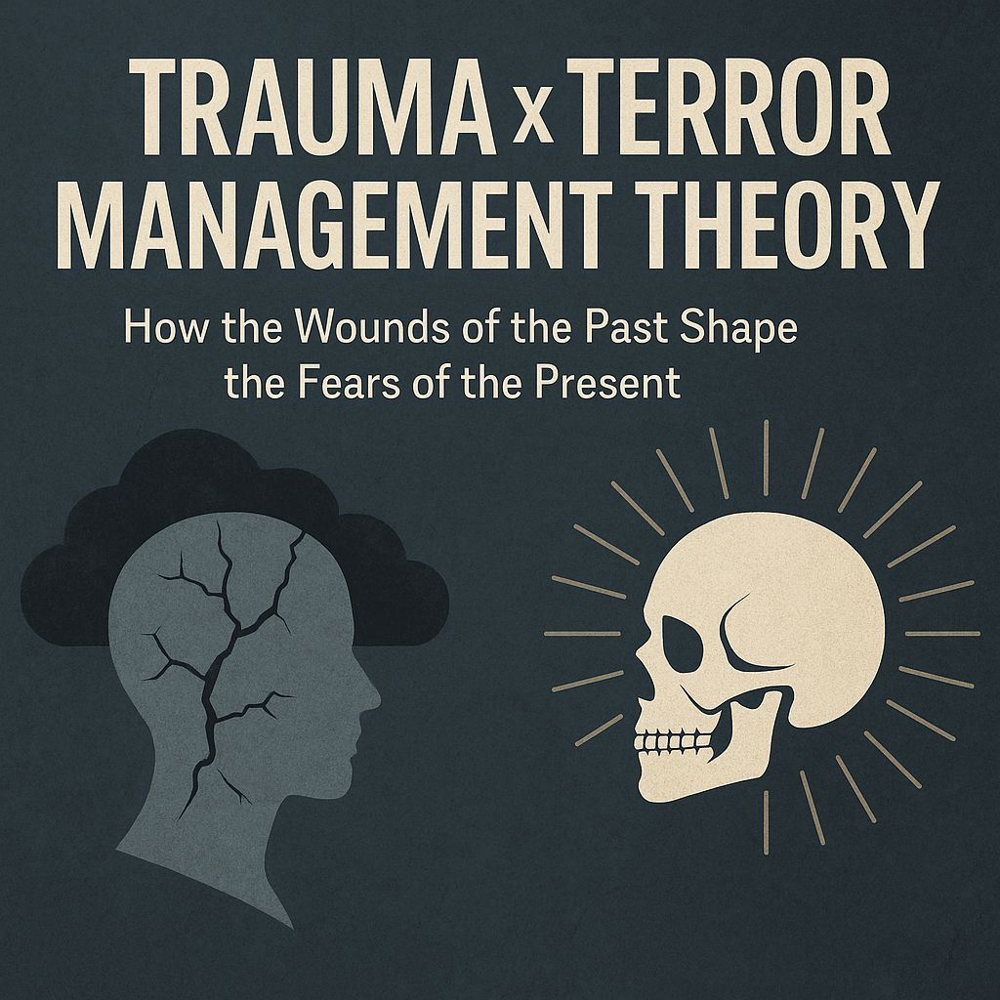

How the Wounds of the Past Shape the Fears of the Present
TMT says people react strongly when reminded of death, vulnerability, or uncertainty.
Trauma makes that button much easier to press because it:
This means traumatized individuals may experience mortality salience even when nothing explicitly references death.
A stressful headline, an angry social media post, cultural change, a new law, or a chaotic news cycle can all trigger echoes of earlier danger.
Influencers do not necessarily need to mention death directly. Trauma has often already primed the system.
TMT suggests people rely on culture, identity, worldviews, and group belonging as buffers against existential fear.
Trauma often fractures or distorts identity.
When identity feels unstable, people may cling more tightly to rigid worldviews, belonging systems, and certainty.
Trauma makes identity fragile. TMT suggests fragile identity increases fear. Fear increases tribalism.
It becomes a loop.
TMT proposes that people defend worldviews when those worldviews feel threatened.
Trauma adds another layer: the nervous system may struggle to distinguish discomfort from danger.
This creates fertile ground for fear-based persuasion and outrage-driven narratives.
TMT predicts that existential vulnerability increases attachment to meaning systems.
Trauma predicts that unresolved fear creates a search for stories that provide:
This can increase attraction toward cult-like communities, conspiratorial systems, extremist ideologies, and parasocial relationships.
Trauma asks: "Why did the world hurt me?"
TMT asks: "How do I protect myself from the fear underneath?"
Trauma often interprets uncertainty through a threat lens.
Messages such as:
may not be processed symbolically. They can be experienced as immediate survival threats.
Under the right conditions this can escalate into panic, scapegoating, hatred, and dehumanization.
High collective trauma loads can contribute to:
Trauma shapes identity. TMT helps explain why threatened identities become defensive. Influencers and institutions can exploit both dynamics.
Many factors that help heal trauma also reduce fear-driven reactions:
As identity stabilizes, fear becomes harder to weaponize.
Trauma makes people easier to trigger.
Terror Management Theory helps explain why those triggers can evolve into tribal reactions, defensive identities, and worldview battles.
Fear-based narratives often exploit both.
Humility, grounded identity, community, reflection, and psychological safety can interrupt the cycle.
A stable person is far more difficult to manipulate through fear.